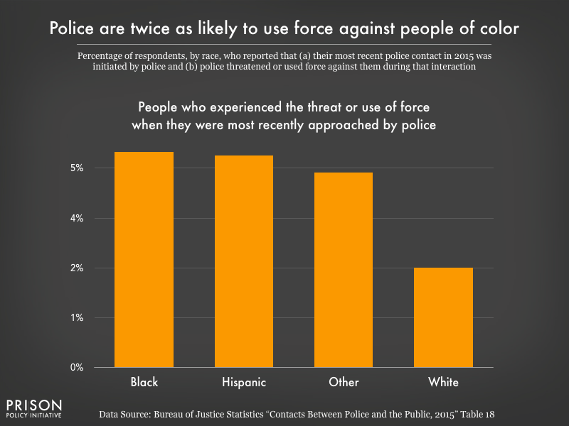

Jones, Alexi. “Police Stops Are Still Marred by Racial Discrimination, New Data Shows.” Prison Policy Initiative, 12 Oct. 2018, https://www.prisonpolicy.org/blog/2018/10/12/policing/.
Law enforcement is over twice as likely to use or threaten to use force against Hispanic and Black Americans.
The adversity immigrants face coming to the United States is often put into the spotlight but there is very little attention paid to their struggles after obtaining citizenship. Hispanic and Latinx Americans continue to face harassment and survivance by border patrol generations after Immigrating legally. From being detained at checkpoints to constantly being suspected of smuggling contraband when crossing the border, the struggles Hispanic and Latinx face do not end with obtaining citizenship.
Collateral Subjects: The Normalization of Surveillance for Mexican Americans on the Border by Adriana C. Núñez!
Researcher Adriana C. Núñez conducted 42 in-depth interviews with late-generation immigrants in the article liked above
Victor makes a commute from Nogales to Tucson for work. The commute takes him an hour and 15 minutes but he has to leave half an hour early out of fear of being detained at the checkpoint between Nogales and Tucson. Victor says this happens often and with no explanation as to why. He is forced to sit in a small holding cell alone and without his phone. Jessica a third-generation citizen did not think her interactions with Border Patrol were racialized until one day she passed through a checkpoint with her white friends. Every interaction with the checkpoints prior to this she was asked if she was an American citizen, she assumed this was standard until she passed through with her white friends, and no such question was asked.
Joel Commonly crosses the US-Mexican border and recounts that despite officers clearly having no right to search his car, they insist, and if he resists he is detained. One of Joel's encounters with customs evolving his younger brother and father was so traumatizing that he says he no longer has any respect for officers.